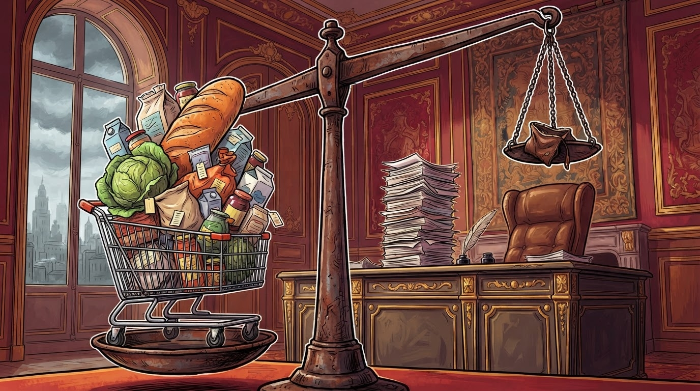

3.2%
Çmimet fluturojnë
Ekonomi
Gazeta Satirike e Kosovës dhe Shqipërisë — lajme që nuk duhet t'i besoni, por i lexoni gjithsesi
Parlamenti do të diskutojë uljen e barrës fiskale, ndërsa çmimet, të pathirrura zyrtarisht në seancë, vazhdojnë karrierën e tyre në rritje.

Një deputet ka kërkuar zyrtarisht interpelancë me ministrin e Financave, duke i bërë thirrje qeverisë të ndërhyjë për uljen e çmimeve dhe të barrës fiskale — një kërkesë që çmimet, sipas burimeve tona, "nuk e kanë marrë fare parasysh".
"Çmimet nuk janë të ftuara në interpelancë, por ato vijnë vetë, pa ftesë, çdo herë kur shkon në market", tha një qytetar që preferoi të mbetet anonim, kryesisht sepse s'donte t'i tregonte gazetës sa ka shpenzuar këtë muaj.
"Ne do të diskutojmë çmimet me seriozitet të plotë. Çmimet, nga ana e tyre, do të vazhdojnë të rriten me seriozitet edhe më të plotë." — burim brenda komisionit parlamentar, duke folur nga korridori
Sipas ekspertëve tanë financiarë, çdo interpelancë e kërkuar shton mesatarisht 0% në çmimin e bukës, por 15% në optimizmin publik afatshkurtër — një shifër që Banka Qendrore e ka quajtur "efekt psikologjik pozitiv, matematikisht të pamatshëm".
Ministri i Financave është pritur të përgjigjet në seancën e ardhshme me argumentin se "çmimet janë globale", ndërsa qytetarët janë të bindur se çmimet e tyre janë "shumë lokale, pikërisht në xhepin tim".
Ndërkohë, tregtarët thonë se janë "hapur" për diskutim, ndërsa çmimet e tyre thonë se janë "mbyllur" për çdo lloj ulje.